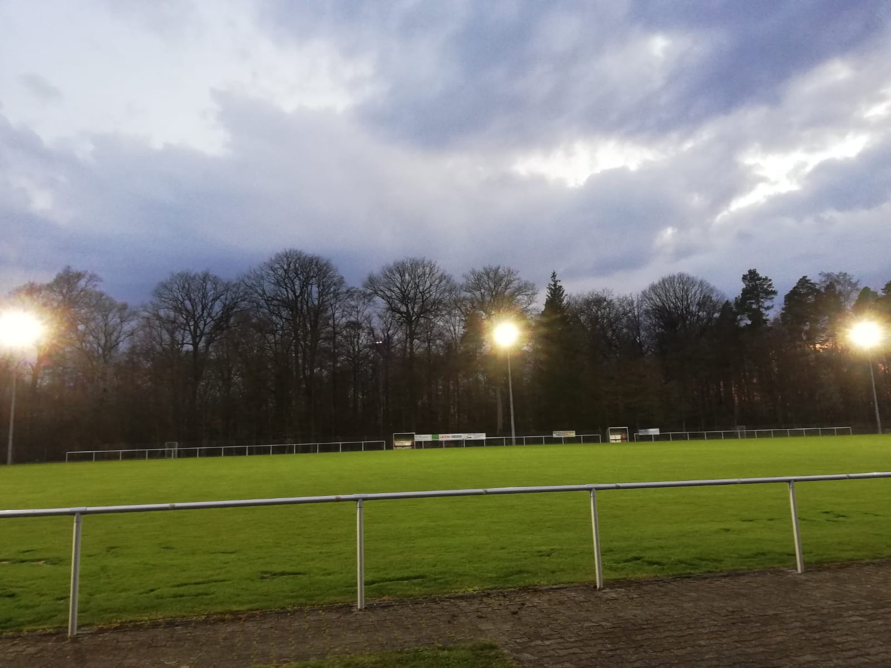

Herrenberg
Zum Mönchberger
Gemütliche Atmosphäre und ehrliche Küche. Deutsche Klassiker und türkische Spezialitäten. Direkt im Grünen am Sportgelände.
Mitten im Grünen
Unser Restaurant liegt ruhig am Sportgelände, umgeben vom Wald. Viele kommen nach dem Spaziergang, nach dem Training oder einfach zum entspannten Essen.
Bei gutem Wetter ist die Terrasse super. Für Familien ist es auch entspannt, weil es einen Spielplatz gibt. Hunde sind bei uns auch willkommen.
Deutsch und Türkisch
Klassiker und Spezialitäten. Für klein und groß Hunger.
Terrasse
Draußen sitzen und entspannt essen.
Spielplatz
Für Familien richtig praktisch.
Hunde willkommen
Bitte normal an der Leine.


Events nach Wunsch
Für Gruppen und besondere Anlässe kann man bei uns auch planen. Von ruhig und seriös bis locker und spaßig. Einfach kurz anfragen.
- Trauerfeiern und Leichenschmaus
- Infoveranstaltungen
- Private Feiern
- Familienfeste
- Kindergeburtstage, optional mit Extras wie Hüpfburg
Reservierung
Online Reservierung über resmio. Du bekommst direkt eine Bestätigung.
Speisekarte
Aktuelle Karte als PDF.
Hinweise zu Allergenen und Zusatzstoffen siehe Aushang an der Theke.
Öffnungszeiten
Es gibt Öffnungszeiten vom Restaurant und extra Küchenzeiten.
Hinweis. Außerhalb der Küchenzeiten gibt es je nach Tag trotzdem Getränke und kleine Sachen. Am besten kurz nachfragen.
Kontakt
Für Fragen, Gruppen und Events. Kein Kontaktformular. Du kannst direkt anrufen oder eine Mail schreiben.
Adresse
b. d. Oberen Steige 1
71083 Herrenberg
Tipp. Bei Events kurz schreiben, um wie viele Personen es geht und welcher Termin grob passt.
